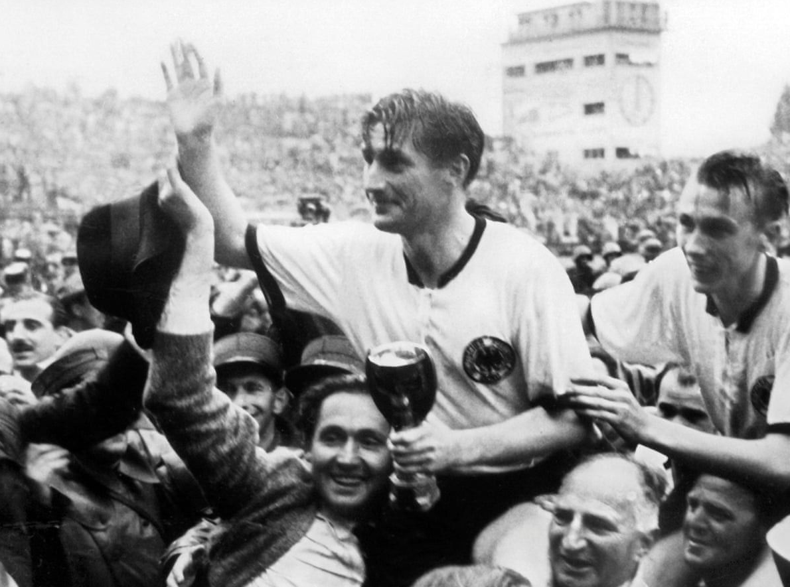
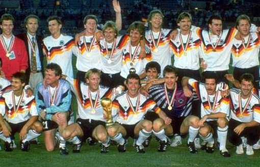
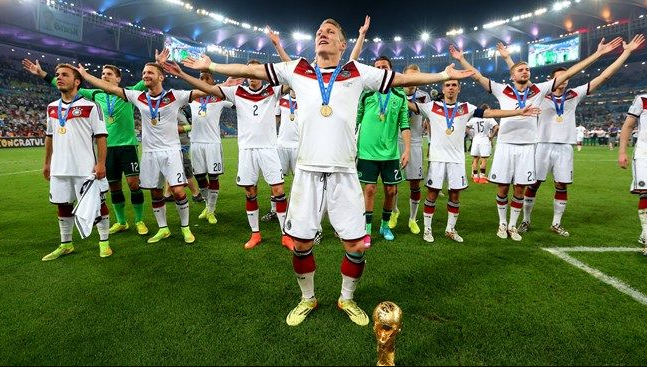

Mundial de Suiza 1954: El milagro de Berna y ascenso a la cumbre futbolística
Bajo la conducción técnica del legendario y visionario Sepp Herberger quién ya había tenido un primer ciclo entre 1936 y 1942, el equipo alemán regresó al máximo escenario del fútbol internacional durante la Copa Mundial de Fútbol de 1954 en Suiza, luego del veto impuesto por la FIFA para la participación en la Copa Mundial de Fútbol de 1950 debido a los hechos de la Segunda Guerra Mundial. En la primera fase, fue asignada en el grupo B, en el primer partido se impuso 4-1 a Turquía, pero en el segundo recibió una goleada de 8-3 por parte del equipo de oro, la Hungría de Ferenc Puskás y Sandor Kocsis.Tras este tropiezo tuvo que repetir el partido contra Turquía, quien no fue rival como en el primer compromiso y le encajó un 7-2, así se clasificó a la segunda fase como segunda del grupo. En cuartos de final superaron a Yugoslavia por 2-0, mientras que en semifinales golearon 6-1 a Austria.
Ficha técnica del partido de la final. Los alemanes disputarían su primera final con Fritz Walter como capitán. Aquella final, conocida también como el «Milagro de Berna», fue disputada en el Wankdorfstadion de Berna ante 60,000 espectadores que colmaron las gradas. Se le denominó «milagro» porque la selección húngara, considerada en la época como la mejor selección mundial —acaso la mejor de la historia—, partía como gran favorita. Los húngaros bautizados como el «Equipo de oro» o «Magiares mágicos» por sus grandes éxitos olímpicos, serían pues los rivales de los germanos. Los húngaros, además de llegar con una racha acumulada de 33 partidos sin perder, habían derrotado previamente a los alemanes en el partido de la fase de grupos por un contundente 8-3, dando muestras de su superioridad.
La lluvia fue protagonista del partido, ya que dificultó el juego de ambos equipos, pero esta condición climática favorecía el juego del germano. Hungría tomó la ventaja con dos goles en apenas ocho minutos de juego. Ferenc Puskás abrió la cuenta a los seis minutos, y al minuto ocho, Zoltán Czibor ponía el marcador 0-2. Sin embargo, los magiares se relajaron y el equipo de Alemania Federal lograba empatar con una rapidez. Al minuto 10, Max Morlock anotaba el 1-2 y ocho minutos más tarde, Helmut Rahn igualaba el marcador. En el segundo tiempo fue figura el arquero alemán Toni Turek, parando varias ocasiones de gol de Hungría. Puskás comenzaba a cojear, fruto del golpe sufrido contra los alemanes en el primer tiempo. Faltaban seis minutos para el pitido final cuando Helmut Rahn marcaba el que sería el definitivo 3-2, que le daba una inesperada ventaja a los teutones. A tres minutos del final, Puskás conseguía el empate, pero el juez de línea Benjamin Griffiths anulaba el tanto por fuera de juego, en una polémica decisión.El árbitro inglés William Ling decretaba el final del partido, y la selección de Alemania Federal lograba así su primer título en la historia de los mundiales.
Este partido tuvo una trascendencia enorme en el país porque marcaba el renacimiento de Alemania a la vez que fue una inyección enorme de moral para una nación devastada por la guerra. En lo futbolístico, el «Milagro de Berna» marcaría un antes y un después en el derrotero del fútbol germano. Desde entonces, Alemania no ha fallado ninguna cita mundialista y no abandonaría la primera línea en el fútbol internacional. Mención aparte merece la figura del gran capitán Fritz Walter, considerado por la FIFA como uno de los más grandes de todos los tiempos,leyenda del fútbol alemán y su primer ídolo. Él más que nadie simbolizaría la «garra» del fútbol germano que tantas veces aparecería en la historia de los mundiales.
Epoca dorada

La «Mannschaft» se presentó como la segunda selección favorita —después de la neerlandesa— para ganar la Copa Mundial de Fútbol de 1974, pues era la vigente campeona de Europa y organizadora del evento. Alemania Occidental dentro del grupo A, venció 1-0 a Chile en su primer partido con gol de Paul Breitner al minuto 18.En el segundo duelo, con anotaciones de Overath, Cullmann y Müller venció contundentemente por 3-0 a Australia.En el tercer encuentro perdió 1-0 ante su contraparte, Alemania Democrática, cuando Jürgen Sparwasser anotó cerca del final, por lo tanto el segundo puesto de grupo clasificó a los de occidente a la segunda ronda.
En la segunda fase quedó en el grupo 2. En su primer encuentro, que fue disputado el 24 de junio en el Rheinstadion de Düsseldorf venció sin complicaciones por 2-0 a Yugoslavia con Breitner y Müller como anotadores. Después en el mismo escenario se impusieron por 4-2 a Suecia con goles de Wolfgang Overath (51), Bonhof (52), Grabowski (76) y Hoeness (89 de penal).
En el último choque del grupo, venció 1-0 a Polonia con gol Gerd Müller en el minuto 76. El compromiso fue disputado el 3 de julio en el Waldstadion de Fráncfort y significó para los germanos el boleto a la final.
En la final, Alemania se enfrentó a la selección neerlandesa el 7 de julio en el estadio Olímpico de Múnich, donde se reunieron 75 200 espectadores.El partido comenzó con gol de los neerlandeses de penalti convertido por Johan Neeskens al minuto 2 sin que los alemanes tocaran el balón. Luego de 25 minutos, Paul Breitner empató el encuentro para Alemania por la misma vía y después, al minuto 43, Gerd Müller logró el gol de la victoria, consiguiendo así la escuadra local su segundo título mundial.Alemania Occidental se convirtió en el primer seleccionado en levantar la nueva versión del Trofeo de la Copa Mundial de Fútbol. Se habían presentado 54 proyectos para el nuevo trofeo y se eligió el diseño del italiano Silvio Gazzaniga, de oro macizo, cinco kilos de peso y base de malaquita, ya que la Copa Jules Rimet había sido concedida a perpetuidad a Brasil en el torneo anterior.
Tricampeones del mundo
Alemania compitió por su tercer título en el Mundial de Italia 1990. En la primera fase del campeonato, quedó integrada en el Grupo D junto a la selección colombiana, la selección emirati y la selección yugoslava. En su primer choque, venció por 4-1 a Yugoslavia con doblete de Lothar Matthäus, y una anotación de Rudi Völler y Jürgen Klinsmann. En el segundo, ante Emiratos Árabes Unidos también consiguió un favorable 5-1 con doblete de Völler, mientras Matthäus, Klinsmann y Bein marcaron los goles complementarios. En el último partido ya clasificada, ante Colombia, consiguió un empate 1-1 con un gol tardío de Pierre Littbarski al 88, mientras que los sudamericanos igualaron en tiempo de compensación con una jugada de Freddy Rincón. Así el combinado nacional acabó como campeón de grupo. En la segunda fase enfrentaron a rivales de jerarquía. Los octavos de final contra la selección neerlandesa, se celebraron el 24 de junio. Un encuentro que se resolvió por un ajustado 2-1, gracias a los goles de Klinsmann al minuto 51 y Andreas Brehme al 82'; por parte de la «naranja mecánica», Ronald Koeman descontó al minuto 89 de penalti.
El 1 de julio, disputó los cuartos de final en el Stadio Giuseppe Meazza contra la selección checoslovaca. Alemania Occidental ganó por 1-0 por la vía de penal de Lothar Matthäus en el minuto 25, alcanzando una vez más la fase de semifinales. Cabe señalar que los checoslovacos disputaron su último encuentro mundialista antes de su desintegración en 1992.
En la semifinal del 4 de julio, en el Stadio delle Alpi de Turín, la escuadra se encontró con la selección inglesa, Brehme marcó el primero al 60, mientras que diez minutos antes de finalizar el juego el inglés Gary Lineker empató el marcador y el partido se alargó a la prórroga. Después de 120 minutos, la tanda de penales se definió con todos los tiros acertados por parte de los alemanes y dos fallos de los ingleses Pearce y Waddle. Así, Alemania Occidental avanzó a su tercera final consecutiva después de 1982 y 1986.
El torneo terminaría con una final disputada en el Estadio Olímpico de Roma entre alemanes y argentinos nuevamente, por lo que —por primera vez en la historia se repetía una final de forma consecutiva—. Los dos conjuntos contaron con sus oportunidades, pero con cierto dominio de la «Mannschaft». El partido estuvo caracterizado por errores arbitrales del colegiado uruguayo nacionalizado mexicano Edgardo Codesal, sumado a la expulsión de dos jugadores de la «Albiceleste» y la agresión voluntaria de Diego Armando Maradona a un jugador alemán.
Un solitario gol, producto de un polémico penalti convertido por Andreas Brehme en el minuto 87, cinco minutos antes del silbatazo final que se dio a los dos minutos de compensación le daría la tercera copa mundial a la escuadra de Alemania Occidental.
Tetracampeonato en el Mundial de Brasil 2014
Alemania disputó la eliminatoria rumbo al Mundial 2014 en el grupo C de la zona europea. Al derrotar 3-0 a Irlanda, el 11 de octubre de 2013 en Colonia, certificó su presencia al Mundial de Brasil 2014 con una jornada de antelación. Como suele ser la tónica con Joachim Löw, la «Mannschaft» alcanzó números demoledores en la eliminatoria: 10 partidos jugados, 9 victorias, 1 empate, 36 goles marcados y 10 encajados.
Durante el Mundial, la «Mannschaft» estuvo encuadrada en el grupo G, como cabeza de serie, junto a las selecciones de Portugal, Estados Unidos y Ghana.
En su debut, disputado el 16 de junio en el Arena Fonte Nova de Salvador, venció con un contundente 4-0 a la selección portuguesa con triplete de Thomas Müller y gol de cabeza de Mats Hummels.
En el segundo, ante la escuadra ghanesa rescató un empate de 2-2. Los goles alemanes fueron obra de Klose en el minuto 51 y Mario Götze al 71, mientras que para los africanos anotaron André Ayew (54) y Asamoah Gyan (63). Aquel encuentro tuvo cita el 21 de junio en el Estadio Aderaldo Plácido Castelo de Fortaleza.En aquel encuentro, Klose igualó el récord de los 15 goles en la Copa Mundial de la FIFA del brasileño Ronaldo.
En el último choque del grupo, disputado el 26 de junio en la Arena Pernambuco de Recife, obtuvo su segunda victoria frente a Estados Unidos por 1-0 con anotación de Müller al minuto 55.Al finalizar la primera fase lideró dicho grupo con 7 unidades, fruto de dos victorias.
En el partido de octavos de final, celebrado el 30 de junio en el Estadio Beira-Rio de Porto Alegre, se midió ante la selección argelina ganando en la prórroga por 2-1, por conducto de André Schürrle al minuto 92 y Mesut Özil al 119.
El 4 de julio en el Estadio Maracaná, ya en la ronda de cuartos venció a Francia por la mínima con gol de cabeza de Hummels en el minuto 12. Así logró avanzar a semifinales por cuarta vez consecutiva desde el mundial de 2002.
Mario Götze marcó el gol en la Final del Mundial de Fútbol de 2014. Sin embargo, el 8 de julio en el estadio Mineirão de Belo Horizonte, Alemania conseguiría en semifinales uno de las mayores hazañas de la historia del fútbol al vencer al país organizador, Brasil, por un abultado marcador de 7-1, convirtiéndose en la mayor derrota de la «Scratch» en su historia. Müller abrió el marcador al minuto 11 tras un error de marca brasileña en un tiro de esquina, once minutos después el 2-0 cayó al 22 por conducto de Klose para convertirse en el máximo goleador de la historia de los mundiales, con 16 dianas, superando a Ronaldo quien dejó su marca en 15. Después del segundo gol, los alemanes presionaron a los brasileños en cada salida, lo que rindió frutos, ya que el centrocampista Toni Kroos anotó el doblete más rápido de los mundiales, en tan solo 69 segundos (24 y 25). Alemania con anotación de Sami Khedira al 29 ya goleaba contundentemente a la escuadra anfitriona por 5-0 antes de la media hora de juego. En la segunda mitad, André Schürrle marcó doblete al 69 y al 79; y casi al final del encuentro, Oscar marcó la única anotación brasileña. Como consecuencia el partido fue bautizado como el «Mineirazo» y pasó a la historia como la semifinal con más goles en la historia de los mundiales y la mayor goleada a un país anfitrión y campeón del mundo.
Alemania jugó su octava final histórica y su tercera ante Argentina, el domingo 13 de julio de 2014, en el Maracaná de Río de Janeiro. En un rígido encuentro y con llegadas claras de ambos equipos, Alemania logró imponerse por 1-0 en la prórroga al minuto 113 con solitario gol de Mario Götze,y así se adjudicó su cuarta estrella mundial, convirtiéndose en el primer país europeo en coronarse en el continente americano.